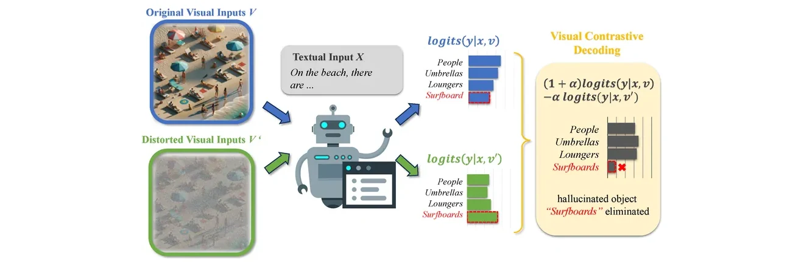

Shreyansh Modi
Computer vision & ML security researcher at IIT Roorkee
I test whether vision-language models are as reliable as they look.
I’m an undergraduate in Electrical Engineering at IIT Roorkee (B.Tech, expected 2028). My research spans computer vision, generative AI and multimodal learning, with a focus on adversarial machine learning and the security of vision-language models.
Recently I co-authored work showing that the gains of contrastive decoding come from a shift in decoding behaviour rather than from mitigating hallucinations (NeurIPS 2026 Workshop, VLM4RWD). I have also steered unconditional diffusion models with concept vectors for training-free image editing (CVPR 2026 Workshop, GCV), and contributed to work localising hallucination-sensitive attention heads in VLMs with activation patching.
I’m a reviewer for NeurIPS 2026 and a core member of the Data Science Group at IIT Roorkee. Previously I was a Machine Learning Engineer intern at Infigro.ai and a research intern in IIT Roorkee’s Electrical Engineering department, and my team placed 4th at Inter IIT Tech Meet 14.0 with our Adobe Photo Editor.
Off the clock, I enjoy watching movies, exploring new ideas in AI and diving into interesting research papers.
Featured Publications
Papers on why vision-language models hallucinate and how to steer diffusion models.
-

Rethinking Contrastive Decoding
Its gains in MLLMs come from decoding behaviour, not hallucination mitigation
NeurIPS 2026 Workshop (VLM4RWD)
-
Perceptual Editing Guidance
Training-free contrast, saturation and sharpness edits in unconditional diffusion
-
How Many Counterfactuals?
Probing VLM hallucinations through circuits and causal effects
arXiv preprint, 2026
Latest Updates
Recent papers, roles and results.
- 2026
Serving as a reviewer for NeurIPS 2026.
- 2026
Rethinking the Effectiveness of Contrastive Decoding in Mitigating Hallucinations in MLLMs at the NeurIPS 2026 Workshop (VLM4RWD).
- 2026
Guidance for Low-Level Perceptual Editing in Unconditional Diffusion Models at the CVPR 2026 Workshop (GCV).
- 2026
How Many Counterfactuals Does It Take? released as an arXiv preprint.
- 2025
Placed 4th at Inter IIT Tech Meet 14.0 with our team’s Adobe Photo Editor.
- 2025
Machine Learning Engineer intern at Infigro.ai (August–October).
- 2025
Joined the Data Science Group, IIT Roorkee, as a core member.
Selected Projects
More projectsReproducibility studies, research prototypes and things I’ve built.
-
RE-UltraBreak: Universal Jailbreak Attacks on VLMs
A reproducibility study of UltraBreak: universal, cross-model image jailbreaks against black-box VLMs, using randomised image transformations and loss relaxations to maximise transferability.
Jun 2026 – Aug 2026 · Adversarial ML, VLM security
-
VLM Hallucination Mitigation via Self-Verification Decoding
A decoding-time framework that enforces strict textual grounding to reduce visual hallucinations, validated on the POPE and CHAIR benchmarks.
Jun 2025 – Sep 2025 · VLMs, decoding
-
Reproducibility Study: Diffusion Models Beat GANs
Replicated OpenAI’s unconditional U-Net and noise-robust classifier to implement classifier guidance, and validated that scaling classifier gradients trades sample diversity for visual fidelity.
Aug 2025 – Sep 2025 · Diffusion models
Experience & Education
Internships, research, service and my degree.
-
2026

Reviewer
NeurIPS 2026
-
Aug – Oct 2025

Machine Learning Engineer Intern
Infigro.ai
Built a data-analysis agent that interprets bar charts and trendlines, an LSTM forecasting system for betting trends and user behaviour, and LLM calls that turn chart data and model predictions into written insights.
-
Feb 2025 – now

Core Member
Data Science Group, IIT Roorkee
Mentored students for Build Your Own Project (BYOP) 2026 on project design and implementation, and organised a hands-on technical workshop.
-
Nov – Dec 2024

Research Intern
Electrical Engineering Department, IIT Roorkee
Implemented and tuned PID controllers for a DC motor to study cyber-physical attacks on closed-loop control, and simulated signal-injection and spoofing attacks in MATLAB and Arduino.
-
2024 – 2028
B.Tech in Electrical Engineering
Indian Institute of Technology Roorkee · expected 2028